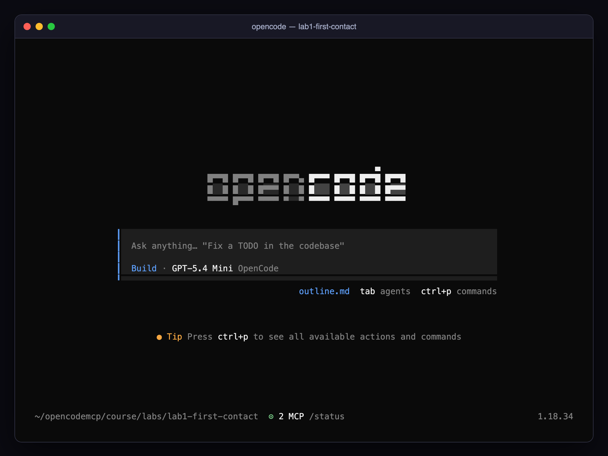

00 · Setup (10 minutes, ideally before class)
🎬 Cold open. In four hours you will give an AI agent hands, watch it use them on things you care about, and then take some of them away again. None of that works if the first ten minutes of class go to
npm install. Do this page the day before.
🎯 Mission
-
npm run checkends with All set. - OpenCode starts in
lab1-first-contactand the footer reads⊙ 2 MCP - You can get around the TUI without a mouse (section 5)
#1. Install the tools
| Tool | Why | Check |
|---|---|---|
| Node.js 20+ and npm | runs every MCP server in this course | node --version |
| OpenCode 1.18+ | the AI agent / MCP host | opencode --version |
| uv (optional) | runs the official Python time server via uvx |
uvx --version |
| git (optional) | lets OpenCode's /undo work; not required |
git --version |
Install OpenCode from https://opencode.ai: curl -fsSL https://opencode.ai/install | bash, or npm install -g opencode-ai, or brew install anomalyco/tap/opencode (macOS/Linux), or scoop install opencode / choco install opencode (Windows; WSL is recommended). Install uv from https://docs.astral.sh/uv/. If you cannot install uv, Lab 1 has a drop-in fallback server.
#2. Log in to OpenCode Zen
Zen is OpenCode's own pay-as-you-go model gateway; the course uses it so nobody needs their own provider keys.
opencode auth login # pick "OpenCode (recommended)" from the provider list, paste the API key from your OpenCode console
opencode auth list # should show: ● OpenCode api
Inside the TUI the same thing is /connect. The lab configs already select opencode/gpt-5.4-mini; you never have to type a model id.
🍬 Treat: what a model gateway is, and why the course uses one. Every model provider has its own API, its own key and its own bill. Zen sits in front of several of them behind one login and one invoice, and OpenCode talks to it as a provider called
opencode. That is why a model id in this course looks likeopencode/gpt-5.4-mini: provider, slash, model. Each lab'sopencode.jsonsets"model"for the agent and"small_model"for OpenCode's cheap background work such as naming sessions. The first line of every one of those files,"$schema": "https://opencode.ai/config.json", is for your editor: with it, VS Code and friends autocomplete field names and underline mistakes as you type. Module 2 is where you will be glad of that.
#3. Install the lab dependencies (once)
cd course/labs
npm install
npm run check
npm run check runs nine checks and prints each one the moment it finishes:

The last line matters: it pre-downloads the MCP Inspector and the demo server so the first opencode start in class takes seconds, not minutes. (A 406 from DeepWiki is expected: MCP endpoints only accept POST.)
What each check is for, so you know which ones you can live without:
| Check | Needed by | If it fails |
|---|---|---|
| Node.js 20+ | every lab | nothing works; install Node 20 or newer |
| Lab dependencies | every lab | run npm install in course/labs |
| OpenCode | every lab | install it and open a new shell |
| OpenCode Zen login | every lab | opencode auth login; without it the model never answers |
| uv / uvx | Lab 1's official time server | optional; the lab has a Node fallback |
| Open-Meteo reachable | Lab 3 (your weather server calls it) | a corporate proxy or firewall; see section 6 |
| DeepWiki reachable | Lab 2's remote server | same; Lab 2 still works with local servers only |
| npm registry reachable | npx downloads (the Inspector, the demo server) |
same; the warm-up will not run |
| npx caches warmed | the first start in class | cosmetic; the first opencode start will just be slow |
One
node_modulesfor all labs. Each lab folder deliberately has nopackage.json; Node resolves imports by walking up tocourse/labs/, which is also where"type": "module"lives. If you copy a lab somewhere else, copypackage.jsonand runnpm installthere too.
#4. First launch
cd course/labs/lab1-first-contact
opencode
You should see the OpenCode home screen with ⊙ 2 MCP /status in the footer. The two servers take a few seconds to start the first time.

Type /exit (or press ctrl+x then q) to leave.
#5. Ninety-second TUI refresher
| Want to… | Do |
|---|---|
| See MCP server status | /status (or look at the footer) |
| Turn an MCP server on/off for this session | /mcps, then space on an entry |
| Start a fresh conversation | /new |
| Switch agent (Build ↔ Plan ↔ your own) | Tab |
| Attach a file or an MCP resource | type @ and pick |
| Run an MCP prompt | type / and look for server:prompt:mcp entries |
| Run a shell command inline | start the message with ! |
| See every command | ctrl+p |
| Approve or reject a tool call | ⇆ to pick Allow once / Allow always / Reject, enter |
| Toggle tool-call details | /details |
| Quit | /exit |
| Ask one question without the TUI | opencode run "your question" < /dev/null (the < /dev/null matters: without it run waits for stdin) |
You will use the TUI for almost everything. opencode run shows up in two late challenges, where you script the agent instead of talking to it. One difference to know now: run cannot show approval dialogs, so any tool that would ask is automatically rejected.
🍬 Treat: two terminals, side by side. Most labs put the agent in one terminal and a live viewer in another, so set up a split now and keep it for the day. VS Code: the Terminal: Split Terminal command (
⌘\on macOS,Ctrl+Shift+5elsewhere). iTerm2:⌘D. Windows Terminal:Alt+Shift+D. tmux:Ctrl+bthen%. Anything that gives you two shells in one window, bothcd'd into the lab folder, is right.
#6. If something is off
| Symptom | Fix |
|---|---|
npm install fails |
use Node 20 or newer (nvm use 20), delete node_modules and retry |
opencode: command not found |
re-run the installer, open a new shell |
Footer shows ⊙ 1 MCP instead of 2 |
you probably lack uvx; in lab1-first-contact/opencode.json set time to "enabled": false and time-js to true |
| The model name in the footer is not GPT-5.4 Mini | you started OpenCode outside a lab folder; cd into one |
| "Permission required" pops up for a file read | that is OpenCode protecting you (default rules for .env files and directories outside the project); it is covered in Module 4 |
opencode run "…" prints nothing and never returns |
it is waiting on stdin; add < /dev/null |
| A lab works in its folder but not in a copy elsewhere | lab servers import the MCP SDK from course/labs/node_modules; keep copies inside course/labs/ |
| The three network checks fail behind a corporate proxy | set HTTPS_PROXY in the shell you start OpenCode from (child processes inherit it, as Module 2 explains), and ask whoever runs the proxy to allow open-meteo.com, mcp.deepwiki.com and registry.npmjs.org |
| Windows: servers start in a shell but not in OpenCode | run the course under WSL; OpenCode on Windows resolves npx/uvx through a different PATH than your shell, and the labs assume a Unix shell for < /dev/null and export |
📼 Next episode. You ask a model what time it is in Tokyo, and find out what it takes for it to actually know. Module 1 · Connecting AI agents to external systems with MCP →